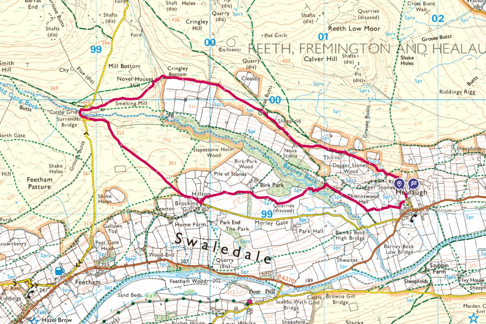
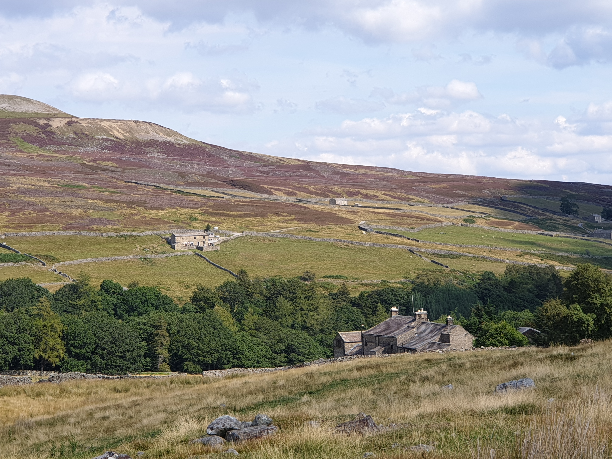

Visiting an old family haunt called Five Intakes near Healaugh. Parking here in Healaugh Village we followed an anti-clockwise loop heading uphill along the valley.

The parking spot, where we left Tiggy.

Then a very steep uphill road, this pic is looking downhill at where we had walked from.

A few photos along the way. After the initial uphill, the path is level for most of the way along grassy and sometimes peaty/marshy ground.

Including Five Intakes.


Our first view of Surrender Mine.


Aftr a picnic at the ruins we crossed the bridge and headed back to Healaugh, following a road for some of the way.

Across the valley from where the hike started.

Then walking through some fields and finally woodland as you cross the river.

Skye checking the bridge was safe.